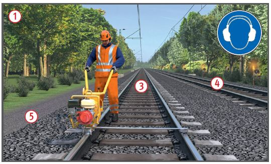
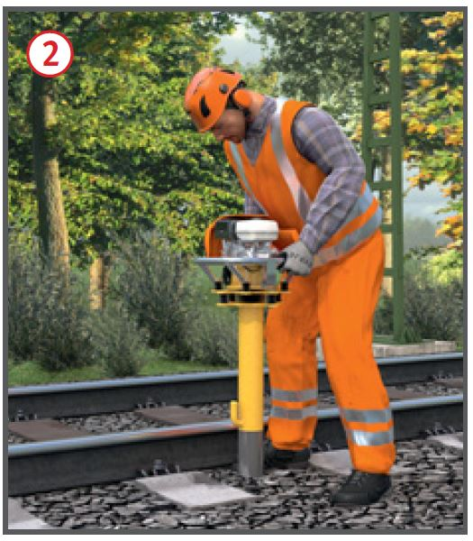
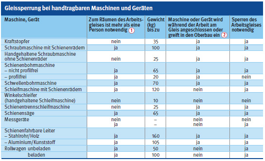
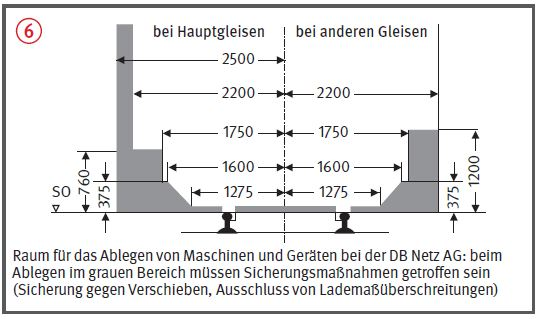

Arbeiten im Gleisbereich
Handtragbare Maschinen und Geräte
|
|

Gefährdungen
- Bei Einsatz von Maschinen
oder Geräten im nicht gesperrten
Gleis besteht die Gefahr, dass
dieses nicht rechtzeitig geräumt
werden kann und Personen von
Schienenfahrzeugen erfasst
werden.
Allgemeines
- Bei der DB Netz AG muss das
Arbeitsgleis bei Einsatz von Maschinen
und Geräten gesperrt
sein.
- Existiert eine solche Regelung
nicht, prüft die für den Bahnbetrieb zuständige Stelle (BzS),
ob eine Gleissperrung möglich
ist. Kriterien zur Entscheidung:
siehe Tabelle

 .
.
Schutzmaßnahmen
Arbeiten im nicht gesperrten Gleis
- Dies ist nur in folgenden Ausnahmefällen zulässig:
- bei geringem Umfang (z. B.
Messung, Besichtigung),
- bei jederzeit möglicher
Arbeitsunterbrechung,
- bei jederzeit sicher einhaltbarer Räumzeit.
- Sicherungsmaßnahmen für
Arbeitsgleis
 und Nachbargleis
und Nachbargleis  sind erforderlich.
sind erforderlich.
- Freigabe der Arbeiten durch
die Sicherungsaufsicht.
Räumzeit
- Räumzeit der für den Bahnbetrieb zuständigen Stelle (BzS)
nennen (DB Netz AG: Sicherungsplan Abschnitt 1).
- Prüfen, ob bei wandernder
Arbeitsstelle die Räumzeit eingehalten werden kann.
- Prüfen, ob der Sicherheitsraum, z. B. Randweg neben dem Arbeitsgleis
 im gesamten
Arbeitsbereich vorhanden ist.
im gesamten
Arbeitsbereich vorhanden ist.
Arbeiten im gesperrten Gleis
- Das Arbeitsgleis sollte gesperrt sein bei:
- Räumzeiten > 5 s,
- Verwendung von Maschinen
und Geräten, bei denen ein
Mitarbeiter zum Räumen des
Gleises nicht ausreicht ,
- Verwendung von Maschinen
und Geräten, die in den Gleisoberbau
eingreifen .
- Das Arbeitsgleis muss gesperrt
sein bei:
- fehlendem Sicherheitsraum,
- in der geplanten Räumzeit nicht
erreichbarem Sicherheitsraum,
- nicht hörbarem Warnsignal,
- nicht befahrbarem Arbeitsgleis.
- Mit der Arbeit im Arbeitsgleis
erst nach Sperrung des Arbeitsgleises und Einrichtung der
Sicherung für das Nachbargleis
und Freigabe durch die Sicherungsaufsicht
beginnen.
Warnung durch akustische Signalgeber
- Bei Einsatz von funkbasierenden
Warnsystemen besteht in
der Regel keine Gefährdung für
die Anlagemonteure, daher
grundsätzlich sicherheitstechnisch
gerechtfertigt.
- Bei Einsatz von Warnsystemen
keine Handauslösung bei Arbeiten
im nicht gesperrten Arbeitsgleis.
- Die akustische Warnung muss
in jedem Fall sicher hörbar sein,
Warnsignalpegel mind. 3dB(A)
über Störschallpegel.
- Wahrnehmbarkeitsprobe vor
Arbeitsbeginn unter ungünstigsten
Arbeits- und Umgebungsbedingungen inkl. Gehörschutz
durchführen.
- Bei lauten Handmaschinen
(z. B. Trennschleifer) ist an der
Arbeitsstelle gegebenenfalls ein
Überwachungsposten mit
zusätzlichem Starktonhorn erforderlich
(Warnung vor Fahrten
im Nachbargleis).



Warnung durch Sicherungsposten
- Nachrangig zu akustischen
Warnsystemen.
- Bei Arbeiten im nicht gesperrten Gleis (DB Netz AG):
- ein Innenposten muss für die
Größe der Arbeitsstelle ausreichen und
- je Richtung maximal ein
Zwischenposten,
- Sicht- und Hörverbindung
zwischen den Sicherungsposten
muss bestehen.
- Bei Nacht und unsichtigem
Wetter keine Arbeiten unter Postensicherung
im nicht gesperrten
Gleis.
Handfunkgeräte
- Handfunkgeräte dürfen zur
Übermittlung der Warnung vor
Gefahren aus dem Eisenbahnbetrieb
nicht eingesetzt werden.
Ablegen von Maschinen und Geräten
- Beim Ablegen von Maschinen
und Geräten den erforderlichen
Abstand zum Gleis beachten .
Im Tunnel
- Handmaschinen mit emissionsfreien
Antrieben einsetzen,
wie Arbeitsmittel mit Elektromotor
(z. B. Akku-Technik).
- Wenn emissionsarme, benzinbetriebene Handmaschinen zum Einsatz kommen, dann sind techn. Belüftung und manntragende CO-Messgeräte erforderlich.
Persönliche Schutzausrüstung
- Warnkleidung mind. Warnklasse 2, gegebenenfalls Warnklasse 3 erforderlich.
- Gehörschutz mit S-Kennzeichnung (Signalhören im Gleisoberbau).
- Arbeitsschutzschuh Klasse S3.
- Augenschutz z. B. beim Schneiden, Schleifen, Brennen.
- Kopfschutz, Regelfall: Industrieschutzhelm.
07/2021